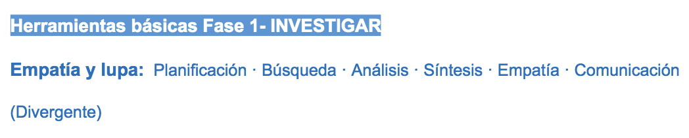

Investigación: Herramientas y experiencias según aplicación.

En esta fase es interesante que el alumnado entienda que hay que comprender los problemas profundizando en las necesidades de las personas.
NOTA: Al comenzar el proyecto o la actividad es importante transmitir entusiasmo al alumnado por lo que vamos a hacer. Una alternativa para captar la atención de alumnos y alumnas es crear una historia o un escenario, un contexto imaginario donde vamos a realizar el proyecto. Esto capta su atención.
Pondré un ejemplo: “Imaginaros que somos un estudio de diseño especializado en mejorar la vida de las personas. Hemos recibido un encargo: vamos a ponernos la lupa de investigadores y vamos a ver si podemos detectar o encontrar algo que se podría mejorar….”
1- Especificaciones
Lo hemos dicho en el bloque 3, en especial en los proyectos de participación, aunque debería utilizarse en todas las actividades que abordemos. Deben estar claras las “reglas del juego” y a esas reglas les llamamos especificaciones.
Un sencillo pliego de especificaciones nos sirve para situarnos y entender lo que vamos a hacer. Puede estar definido por el docente o colaborativamente entre todas las personas participantes en el mismo. Simboliza un acuerdo.
Debería comprender los siguientes apartados:
- Definición: ¿De qué se trata? ¿Es un taller, un proyecto, una experiencia…?
- Objetivos: ¿Qué pretendemos hacer o aprender?
- Especificaciones: ¿Para quién es?, ¿Dónde lo vamos a llevar a cabo?, ¿Con qué metodología?, ¿Es evaluable?, ¿A quién afecta?, ¿Cuánto tiempo dura?, ¿Cuántas ideas se desarrollan?, ¿Cómo se forman los equipos?, ¿Se desarrolla una idea por equipo o se selecciona una sola idea por clase?, ¿De cuántas personas están compuestos?, ¿Se va a implementar la solución?, ¿Tenemos aliados externos?, ¿Cuál es el papel del alumnado y el del profesorado en el proyecto?
- Restricciones: ¿Cuál es su entorno de influencia: comunidad educativa, barrio..?, ¿Podemos involucrar a amigos, familias?, ¿Podemos abordar mejoras en el centro educativo, en el aula, en otros espacios comunes…?, ¿Hay presupuesto?, ¿Cuánto?
2- “One day in a life”:
Comenzamos a hablar del tema que queremos abordar, y para “romper el hielo” podemos utilizar unas imágenes del contexto.

Por ejemplo, si estamos abordando un proyecto sobre la integración de las familias en el centro educativo, nos ayuda mucho visualizar imágenes de las personas interactuando en los dos contextos: el familiar y el del centro educativo. Es el primer paso para comenzar a hablar y poder hacer una lluvia de hechos (lo que sucede en esos contextos, lo que los une, los separa, contradicciones, etc.).
Esta lluvia de hechos nos va a ayudar a abordar el tema, nos da pie a hablar sobre los actores involucrados, las necesidades, problemas que detectamos, etc.
El material lo podemos elaborar realizando unas tarjetas con imágenes relacionadas con el tema del proyecto. La idea es facilitar el diálogo inicial y que comiencen a surgir hechos.
Cada participante irá compartiendo los hechos que conoce o ha experimentado.
3- Mapa de actores:
Las herramientas que te voy mostrando, como verás, nos ayudan a visualizar. Es el caso del mapa de actores.
En el momento de abordar cualquier tema es importante conocer todos los actores (personas, colectivos, organizaciones) involucrados.
Una ficha así de sencilla nos ayuda a colocar en el centro a la persona usuaria principal o beneficiaria y a su alrededor, y en diferentes anillos concéntricos, según su importancia, protagonismo o proximidad, al resto de los actores que intervienen.
Usuarios o aliados, que se relacionan con el producto, servicio o eco-sistema que estamos analizando.
Al visualizar a todos los actores es más fácil reflexionar sobre lo que sabemos de ellos, detectar cuales son clave en el proyecto y así, poder establecer unas prioridades a la hora de plantear la investigación.
Verás en el ejemplo que ilustra la herramienta que para completarla se han utilizado notas adhesivas. Esto me da pie a hacer una aclaración sobre las notas adhesivas:

NOTA: Hay especialistas facilitadores en Design Thinking y profesionales del diseño que consideran que las notas adhesivas “asustan” a las personas que se acercan a metodologías ágiles por primera vez y son partidarios de trabajar solo con papel, rotulador y fichas para rellenar. Aunque estoy de acuerdo en que muchas veces las herramientas o materiales que utilizamos pueden suponer, al principio, una barrera; en el caso de niños, niñas y jóvenes esa barrera se diluye, ya que frecuentemente tienen interés por conocer materiales nuevos. Considero que, por lo general, su curiosidad vence su inseguridad, aunque es conveniente hacer la reflexión en cada caso.
4- “Qué sé, qué me falta por saber”:
Algunas de las herramientas que vamos a poder trabajar en el aula son muy sencillas, pero muy clarificadoras, como es el caso de la que os presento.
Por lo general no estamos acostumbrados a trabajar siguiendo unos “pasos” que nos marcan hitos para la toma de decisiones.
Esta herramienta viene a ayudarnos a reflexionar y visualizar lo que sabemos y lo que necesitamos saber del tema que nos ocupa.
Escribimos en la parte superior de una hoja grande las dos frases interrogativas: ¿Qué sabemos ya?, ¿Qué nos falta por saber? Cada integrante del equipo va escribiendo (con pocas palabras y en mayúsculas) lo que sabe del tema mientras lo comparte con su equipo. Después se completa la columna de lo que nos queda por saber.
Para realizar esta tarea solemos utilizar notas adhesivas, así todas podemos ir completando a la vez el panel de manera muy dinámica.
5- Plan de investigación
En ocasiones nos resulta difícil organizar las tareas y concretar la duración de las mismas. Comenzar utilizando fichas como la de investigación nos ayudan a habituarnos a escribir y reflexionar sobre lo que queremos hacer, cómo lo vamos a hacer, quién lo va a hacer y en qué tiempo se va a realizar.
Una vez tengamos definido el proyecto o la actividad podemos comenzar a investigar.
Reflexionamos sobre lo que ya sabemos del tema y sobre lo que nos queda por saber.
Es importante que cada alumno o alumna tenga una tarea individual para realizar durante la investigación y pueda trasladar a su equipo lo que ha descubierto.
Es fundamental marcarse un objetivo temporal para realizar la investigación.
Al final de la dinámica cada una de las personas que integran el equipo sabrá: qué necesita saber, cómo lo va a averiguar y de qué tiempo dispone para hacerlo.
6- Entrevista
Esta herramienta nos ayuda a profundizar en lo que estemos trabajando con los actores que tienen algo que decir respecto del producto, servicio o experiencia que estemos re-diseñando o diseñando.
Preparar una entrevista necesita tiempo.
Es una de las herramientas que más se utilizan para comenzar a investigar.
Lo primero que hacemos es escribir un guión. El guión para la entrevista debe constar de 4 a 6 preguntas abiertas.
Es importante que permitamos que las personas puedan contarnos libremente su experiencia, opinión, etc. sobre el tema que queramos conocer. Es importante que estén cómodas y se encuentren en un ambiente tranquilo.
Recomiendo que la duración de la entrevista sea de 30 a 60 minutos.
Es importante grabar la entrevista o coger notas de los aspectos más relevantes (es ideal que la entrevista la hagan dos personas: una de ellas pregunta y está pendiente del lenguaje no verbal, y la otra toma notas)
7- Conclusiones entrevistas
Es una herramienta que nos ayuda a sintetizar la información obtenida. Nos esforzamos por clasificar la información, para ello podemos ordenarla y visualizarla mediante un esquema o un diagrama de Venn, por ejemplo.
Para eso utilizaremos notas adhesivas que nos permiten “mover la información”, ordenar por categorías, etc. También podemos utilizar una ficha para ordenar y sintetizar todo lo aprendido durante la investigación.
8- Encuesta
La encuesta es una herramienta con la que podemos comprobar en qué medida se da lo que hemos detectado en las entrevistas o mediante la observación de las personas usuarias en el entorno. Nos sirve para confirmar tesis o descubrimientos.
Hoy en día es muy asequible la posibilidad de hacer una encuesta online mediante Google Forms:
9- Búsquedas fuentes secundarias (internet)
La información que encontramos en internet es un ejemplo de lo que llamamos fuentes secundarias de información.
Las fuentes secundarias se han elaborado con anterioridad a la investigación que estamos realizando o con un fin distinto al objeto del estudio pero, sin embargo, son útiles para la obtención de información válida para la investigación que se está acometiendo.
Es habitual que pidamos al alumnado que se informe de un tema o que haga averiguaciones en internet. Para no caer en un “corta-pega” que no aporta nada, les pedimos que elaboren unas preguntas (bien formuladas) sobre aquello que quieren averiguar. Preguntas concretas.
De este modo, para dar respuesta a las preguntas, no será suficiente con buscar cualquier página o cualquier foto y pegarla en un documento de texto, sino que tendrán que elaborar la respuesta leyendo diversas fuentes y construyendo ellos mismos el mensaje.
Si no estamos seguros de que puedan hacer este trabajo, quizás deberíamos entrenar con pequeños ejercicios que les ayuden a potenciar su capacidad de analizar y sintetizar información.
También puede ser útil recabar información sobre las personas usuarias por medio de fotografías, que podemos pegar en nuestro corcho o zona de proyecto para no olvidar para quién estamos trabajando.
Otras herramientas de investigación:
Shadowing (o ser la sombra de alguien), diario de aprendizaje (diarios con fotos de un día de una persona), observación en contexto, Mystery Shopping (o cliente misterioso) y la dinámica de grupo son algunas de las herramientas o técnicas que se utilizan para obtener o recabar información en Design Thinking.
ANEXO: Herramientas de la fase "Investigar" en PDF.

Design Thinking en educación por Elena Bernia bajo licencia Creative Commons Reconocimiento-NoComercial-CompartirIgual 4.0 Internacional License.